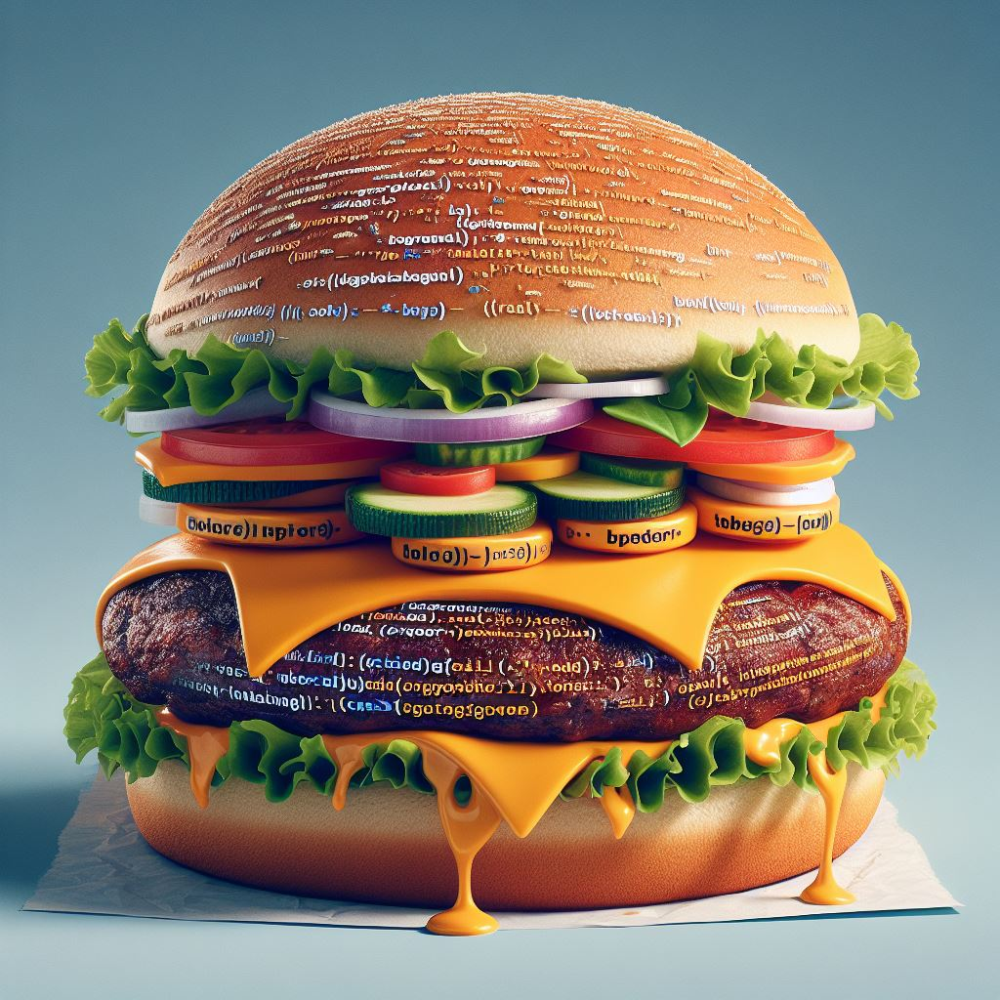

JavaScript Burger: Le Festin du Code Délicieux
Bienvenue, petits chefs de code, à notre festin JavaScript spécial! Aujourd'hui, nous plongeons dans
l'univers
délicieux du langage JavaScript, le secret magique derrière le dynamisme de nos sites web. Alors, attachez
vos
tabliers et préparez-vous à concocter une délicieuse recette de code!


Chapitre 1 : Les Ingrédients Secrets du JavaScript
Imaginez le JavaScript comme la sauce secrète de notre hamburger numérique. Il donne vie à nos pages
web, les rendant interactives et dynamiques. C'est le magicien qui transforme des lignes de code en
actions étonnantes!
Le JavaScript, c'est comme la mayonnaise - ça rend tout plus crémeux et délicieux. Il s'infiltre dans le
HTML et le CSS, apportant une saveur spéciale à chaque bouchée de votre site web.
Chapitre 2: Préparation du Code Gourmand
Maintenant, mettons nos toques de chef et plongeons dans la préparation de notre code gourmand. Le
JavaScript utilise des "fonctions" pour exécuter des actions. C'est comme donner des ordres à votre
hamburger pour qu'il se prépare exactement comme vous le souhaitez.
Prenons un exemple simple. Supposons que vous vouliez que votre hamburger s'affiche avec un message
secret lorsque quelqu'un clique dessus. Voici comment le JavaScript le ferait:
javascript
function afficherMessageSecret() {
alert("Bienvenue dans le monde magique des hamburgers!");
}
Vous avez maintenant créé votre première recette JavaScript! Quand votre hamburger (ou bouton) est
cliqué, il dévoile le message magique.
Les Bases du JavaScript à la Sauce Bizarre
Le JavaScript a des bases, un peu comme les pains d'un hamburger. Voici quelques
ingrédients de base :
-
Variables: Comme des boîtes pour stocker des informations. Imaginez-les comme des bacs
d'ingrédients dans votre cuisine.
javascript
var ingredientPrincipal = "JavaScript";
-
Boucles: Répéter des actions, comme superposer les couches d'un hamburger.
javascript
for (var i = 0; i < 3; i++) {
console.log("Ajouter une couche!");
}
-
Conditions: Prendre des décisions, un peu comme choisir entre ketchup et moutarde.
javascript
if (ingredientPrincipal === "JavaScript") {
console.log("C'est délicieux!");
} else {
console.log("Besoin de plus de JavaScript!");
}
Chapitre 4: Des Exemples de Recettes JavaScript
-
Animation de Burgers :
Utilisons JavaScript pour créer une animation de burger qui danse sur votre site. Ajoutons
une
classe CSS spéciale quand on clique sur le burger!
javascript
function danserBurger () {
var burger = document.getElementById("burger");
burger.classList.toggle("danse");
}
-
Calculateur de Commandes :
Créons un calculateur de commandes en JavaScript. Quand vous choisissez un burger, il calcule
automatiquement le coût total!
javascript
function calculerPrix(burgerChoisi) {
var prix = 0;
switch (burgerChoisi) {
case "JavaScriptBurger":
prix = 10;
break;
// Ajoutez d'autres cas pour chaque burger
}
return prix;
}
-
Hamburger Magique :
Imaginez un hamburger qui se transforme en un autre avec une simple commande. Voici comment
le
JavaScript peut le faire:
javascript
function transformerHamburger() {
var hamburger = document.getElementById("hamburgerMagique");
hamburger.src = "nouvelHamburger.png";
}
Chapitre 5: Dégustation Finale
Félicitations, petits chefs de code! Vous avez maintenant une compréhension délicieuse du JavaScript.
Comme
les hamburgers, la programmation peut être amusante et pleine de surprises.
Alors, explorez, créez et
régalez-vous avec votre JavaScript Burger préféré! 🍔✨